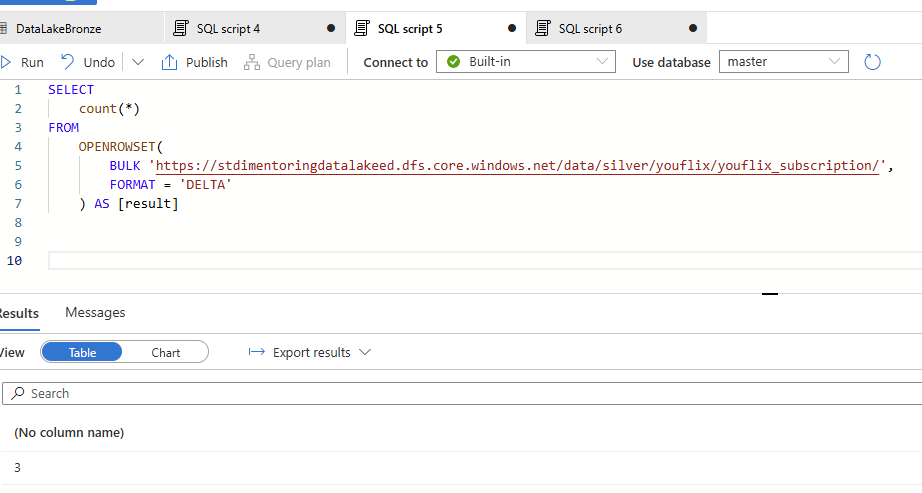
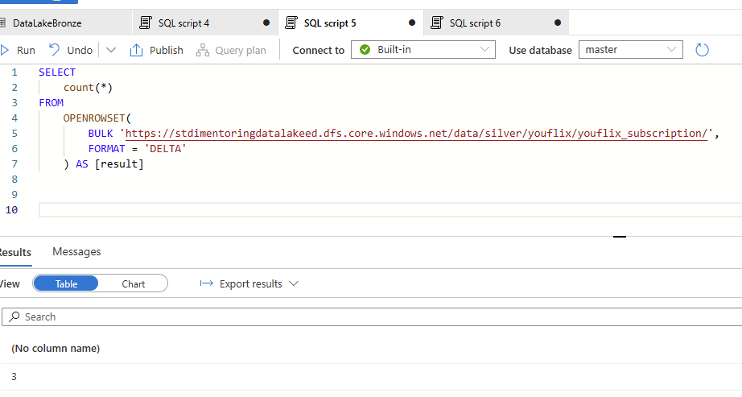

“bronze/youflix” and “silver/youflix” directories.DeploymentScript.sql script. It is necessary to
get rid of the results of your previous execution and testing activities.YouFlix database from your Databricks workspace.stdimentoringdatalakexx and proceed to Storage browser, then click on Tables and edit
each of entity by setting watermark value to 2000-01-01T00:00:00.00Z.Take screenshot(s) of created trigger.


Execute pipeline from task 1.1 manually.
When it’s completed and pipeline from task 1.2 is triggered, take screenshot(s) from Monitor tab with
“Triggered by” column is visible for the triggered pipeline.

In Synapse Workspace, navigate to Data section, find in Linked tab your container, open “silver/youflix” and
check number of rows for each delta table using SQL query.
Take screenshot(s) of SQL queries with count values.
Connect to MS SQL Server YouFlix database and run the following command:
sql
EXEC youflix_internal.sp_youflix_tables_insert_update 200000, 0;
Execute pipeline from task 1.1 manually and wait until triggered pipeline from 1.2 is finished.
 
